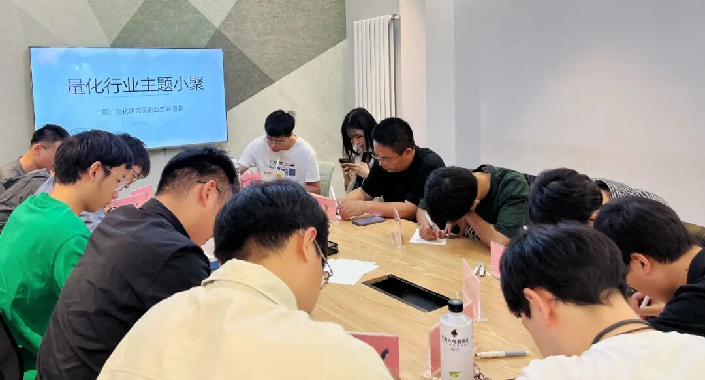

主题回顾
本次主题：量化研究员职业发展图鉴
主题背景：根据中国量化白皮书调查显示，行业内普遍认为做好 Quant 的关键素质先后顺序分别是：扎实的专业技能、聪明、快速领悟、对世界的认知、勤奋努力。聪明有助于单次研究的胜率，而努力则决定长期的水平。当下行业人均学历卷的不能再卷的情况下，还有什么因素推动了一个 Quant 从优秀走向卓越？
交流话题：1.从业者分享自己的职业生涯，如入行原因、工作内容、职业发展？2.如何开始学习量化投资以及获得第一份实习或全职机会？3.如何利用开源量化工具和数据在学校阶段自学与提升量化能力？4.量化投资中的数据采集、清洗和处理技术交流？5.量化投资在不同市场环境下的表现与特征？6.如何更好地结合传统投资理论和量化技术构建投资策略？
小聚成员
本次活动根据大家填写的报名表，依照“深度交流+多元讨论”的主旨，一共邀请15位小伙伴参与，其中量化私募CEO1位，从事量化行业全职工作的伙伴5位，目前在量化行业实习的伙伴7位，值得一提的是，参与本次小聚的全职和实习伙伴所在公司多为知名外资与百亿私募。

活动反馈
今天结识了许多非常出色的朋友，有券商自营、外资私募、国内百亿的dalao们，大家分享目前的心得与感悟，彼此给出了非常多优质建议，非常喜欢这种沟通氛围，下次希望还能参加！——某北京量化私募小白
1.听到了许多非常印象深刻的经历与故事，感受到行业的活力与未来多样性的挑战；2.收获了许多宝贵的建议，也了解到许多之前不曾了解的信息，以帮助个人的未来发展；ps.这是第二次参加量化行业小聚活动了，感觉每一期的嘉宾都非常有趣！每个人的眼界经历不同，更能探索出不一样的思维&视角！祝量化行业小聚活动越办越好！——探索更多可能性的年轻人
感谢高哥办的这次活动，很开心认识大家，不再闭门造车，希望之后能跟大家继续交流，祝活动越办越顺利(^▽^)。——外资Quant实习小白
感想：在这里解决了之前一直有的困惑，得到了正式职员前辈们的建议和真知灼见，原来信号挖掘是对个人成长收益最大的一部分内容。同时，也受到了许多同龄人的感染，对于有强自驱力去自己写策略回测实盘的同学感到佩服，也意识到这不失为实习空窗期的一个自我提升好机会！——困于先验因子挖掘实习的到场唯一女嘉宾
认识了很多大佬，听到了他们在行业中的逸闻趣事，对自己的职业规划有了更清楚的认知，下次还会参加！——Quant Rookie
之前对量化这个行业的职业发展选择一直有一个很深的困惑：是去大公司还是小公司？经过交流，可能觉得去大公司能有更大的议价权、更稳定、能有更精的人脉，相比小公司，只能一直在小公司干，可能更多选择空间，之后可能尽量能去更大的公司或者外资。——量化小白 在读博士
感觉今天真的是学习到了许多，尤其是各位大佬的回答对个人未来职业发展有着非常大的作用，希望以后有多多交流的机会，也祝各位有更好的发展！——真量化小白
第二次参加活动，聆听了刚入行的年轻人的想法，更广泛的了解了量化行业的发展趋势。无论后面公开招聘虎将，还是公开的策略的研发，都受益匪浅，感谢主办方。——岳鑫遥私募 陈策
最大的收获在于认识了量化各个层面是什么样子的，听到了一些insider的声音，发现一些相似经历的人时，能够在经历上有共鸣，交流各自研究并改进的点子，会很有收获。——中关村量化资深小白
很高兴能跟非常多清华理工科的同学、全职人员一同交流量化行业的求职信息、历程以及八卦，在座的，有商科、理工、工科的学生，也有游资和在职的员工，在听完在座各位所有人的经历之后，觉得最重要的还是Coding、统计以及边际收益，当然还需要对行业的热爱以及独有的想法。——真热爱量化的理科学生
最大收获是认识了组织者以及一批很有活力的朋友，觉得大家对量化行业都具备很高的热情，每个人都有自己的感悟，希望以后常相见！——某朝阳区券商营业部 基层交易员
头一次来，来之前还准备了一些技术细节，聊完之后觉得不需要自己解决了，以后找人合作，就从今天的与会者里选人就行。另外感慨量化不好做了，牛人越来越多，不知道中国的超额还能赚几年，且行且珍惜吧。——许嵩量化圈分嵩
收获：在职业发展方面，了解了量化与传统金融的一些区别，以及对各家私募的情况有了了解，特别是一些另类数据的作用，以及在大厂的量化基本流程（多因子、线性/非线性）等。——清华业余量化的研究生一枚
大家的收获札记